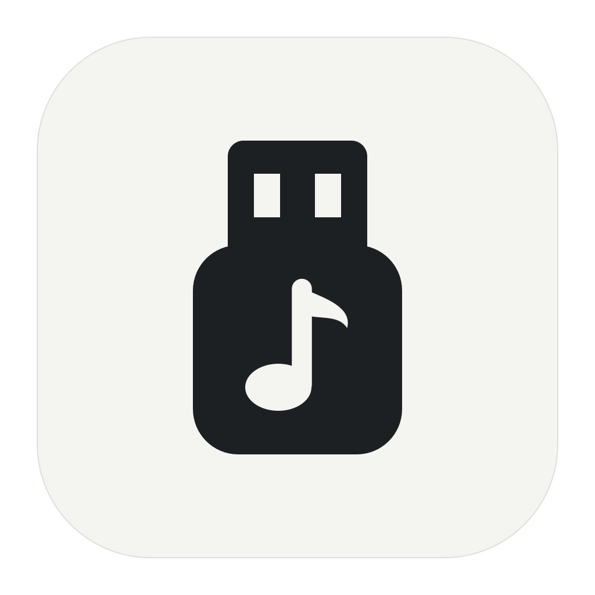

滑动调节，点击静音
记住音量与输出设备，下次打开接着用。

USB Volume给 USB 音箱的菜单栏小工具
给无法直接调节音量的 USB 音箱，一个常驻 Mac 菜单栏的滑块。
免费下载 Mac 版交互示意，不播放声音。
适用于双声道、无输入通道的 USB 输出设备。已在 MOONDROP MM3A 上验证。
留在菜单栏，不占 Dock。
记住音量与输出设备，下次打开接着用。
松开滑块获得声音反馈。静音或零音量时保持安静。
跟随系统，或在设置中选择熟悉的语言。
在设置中开启，登录 Mac 后自动回到菜单栏。
音频只在本机处理，不保存、不上传，不读取麦克风。
适用于搭载 Apple 芯片的 Mac。
解压 ZIP，将「USB 音量.app」移入「应用程序」文件夹。
本版尚未公证。如被 macOS 阻止，在「系统设置 → 隐私与安全性」中选择「仍要打开」。
退出 eqMac 等音频处理软件。按提示允许系统音频录制，再点击顶部菜单栏图标。
目前面向双声道、没有输入通道的 USB 输出设备，已在 MOONDROP MM3A 的 48 kHz 音频通路验证。其他设备的兼容性可能不同；不支持 Intel Mac。
应用需要读取正在播放的系统音频，调节音量后送回音箱。这个权限名称由 macOS 提供；应用只在内存中处理音频，不录制文件、不上传，也不读取麦克风。
键盘音量键支持正在完善，需要单独授予辅助功能权限，目前仍需在实际设备上验证。建议以菜单栏滑块作为主要控制方式。
可能会。USB Volume 通过自己的菜单栏滑块控制声音，不会改变设备对 macOS 原生音量控制的支持。
音箱会恢复原始音量，声音可能变大。退出或暂停音量控制前，请先暂停播放。
一个滑块，让 USB 音箱更好用。
下载 v0.1.0